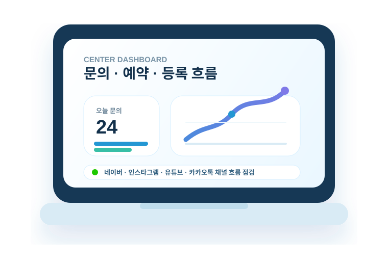

첫 문의에서 신뢰가 생기도록 설명 흐름을 정리합니다.
RAPPORT COMPANY
아이의 성장과
센터 운영을 함께 설계합니다.
아동발달센터의 철학, 상담 흐름, 운영 기준, 지역 마케팅을 하나의 방향으로 정리해 학부모에게는 신뢰를, 센터에는 반복 가능한 성장 구조를 만듭니다.
센터 브랜딩
운영 프로세스
지역 검색 마케팅
CENTER OPERATING SYSTEM
상담 · 운영 · 콘텐츠
문의 흐름 리포트
검색부터 상담 예약까지 이어지는 흐름을 점검합니다.
문의
예약
등록
예약, 수업, 수납, 재등록 기준을 한눈에 보이게 만듭니다.
학부모가 검색하는 질문을 콘텐츠 주제로 연결합니다.
운영 점검
상담 · 수업 · 콘텐츠 흐름을 하나로 정리


CENTER PAGE
센터 소개 구조
센터 철학, 치료 영역, 상담 안내를 학부모가 신뢰할 수 있는 페이지 흐름으로 정리합니다.
OPERATION FLOW
운영 프로세스
매일 반복되는 예약, 상담, 결제, 재등록 흐름을 간단하고 명확한 기준으로 만듭니다.
LOCAL CONTENT
지역 콘텐츠 설계
학부모가 검색하는 고민과 지역 키워드를 센터의 강점이 보이는 콘텐츠로 연결합니다.
Rapport
센터의 전문성과 따뜻함을 한 페이지에 담습니다
아동발달센터는 단순한 홍보보다 신뢰가 먼저입니다. 센터가 가진 치료 철학, 프로그램 구성, 상담 메시지를 학부모가 이해하기 쉬운 흐름으로 정리합니다.
Rapport 자세히 보기신뢰 메시지
아이와 가족에게 전달할 핵심 문장을 정리합니다.
브랜드 톤
차분하지만 밝은 아동센터 이미지를 만듭니다.
상담 문구
첫 문의, 프로그램 설명, 등록 안내를 일관되게 정리합니다.
Consulting
원장님이 매일 확인하기 쉬운 운영 기준을 만듭니다
상담, 예약, 수업, 수납, 재등록, 홍보를 각각 따로 보지 않고 하나의 운영 흐름으로 연결합니다.
센터 상황 진단
현재 상담, 수업, 수납, 홍보 흐름을 먼저 확인합니다.
운영 구조 설계
반복 가능한 운영 기준과 관리 포인트를 정리합니다.
마케팅 실행
센터의 강점이 학부모에게 보이도록 콘텐츠를 설계합니다.
성과 관리
문의, 등록, 재방문 지표를 보고 다음 실행을 조정합니다.
Parent Search Flow
지역 검색 예시
논현동 언어치료 센터
학부모가 자주 찾는 고민과 지역 키워드를 정리합니다.
치료 영역, 상담 안내, 후기 흐름으로 자연스럽게 연결합니다.
검색 이후 문의, 예약, 방문까지 이어지는 문구를 맞춥니다.
광고처럼 밀어붙이기보다, 학부모가 이해하기 쉬운 설명으로 정리합니다.
지역 콘텐츠 설계
학부모가 궁금해하는 질문을 센터의 신뢰 콘텐츠로 바꿉니다
센터가 하고 싶은 말만 나열하지 않고, 학부모가 검색하는 고민에서 시작합니다. 지역 키워드, 치료 영역 소개, 상담 안내, 후기 흐름을 한 방향으로 묶어 문의로 이어지는 콘텐츠 구조를 만듭니다.
지역 키워드 정리
학부모 질문형 주제
상담으로 이어지는 문구
콘텐츠 설계 자세히 보기
제작 영역
보여주기용 화면보다 실제 운영에 필요한 단위로 만듭니다
홈페이지 한 장을 예쁘게 만드는 것에서 끝내지 않고, 학부모가 이해하는 화면과 원장님이 바로 활용할 수 있는 안내 문구를 함께 정리합니다.
🧩 구조
📄 문구
📍 지역성
💬 상담 연결
01 PAGE
센터 소개 · 랜딩 화면
첫 방문자가 센터의 분위기, 치료 영역, 상담 흐름을 빠르게 이해하도록 구성합니다.
02 GUIDE
상담 · 예약 안내 문구
처음 문의한 학부모가 헷갈리지 않도록 상담 전후 안내 문구를 정리합니다.
03 CONTENT
지역 검색형 콘텐츠
센터의 강점과 지역 키워드를 연결해 블로그, 플레이스, 후기 흐름을 설계합니다.

Guide
처음부터 크게 바꾸지 않고, 필요한 부분부터 정리합니다
현재 운영 중인 센터도, 새롭게 준비하는 센터도 부담 없이 시작할 수 있도록 페이지 구조, 상담 문구, 운영 흐름, 마케팅 콘텐츠를 단계별로 정리합니다.
홈페이지, 블로그, 상담 안내 자료를 함께 봅니다.
당장 필요한 페이지와 콘텐츠부터 결정합니다.
문구, 디자인, 운영 안내를 실제 화면에 반영합니다.
문의 안내
센터 상황을 먼저 듣고, 필요한 부분부터 가볍게 정리합니다
실제 신청서는 상세 Contact 페이지에서 받도록 두고, 메인에서는 어떤 이야기를 나누면 좋은지 미리 안내합니다. 아직 자료가 완벽하지 않아도 괜찮습니다.
신규 오픈인지, 운영 중인 센터인지 확인합니다.
홈페이지, 상담 문구, 지역 노출 중 우선순위를 잡습니다.
기존 소개글, 사진, 블로그, 플레이스 상태를 함께 봅니다.
필요한 작업 범위와 진행 순서를 간단히 안내합니다.